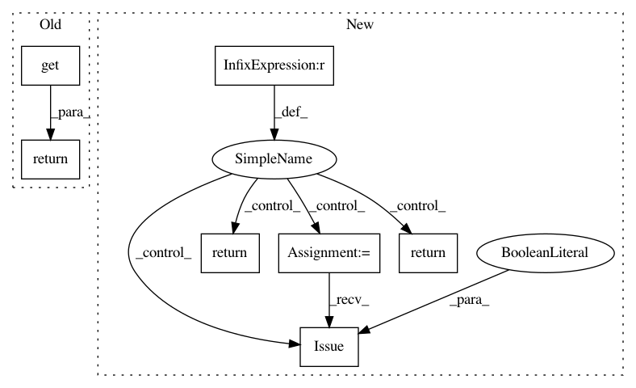

0d646d103590b367c28d1e9588edca610b361e1f,perfkitbenchmarker/providers/rackspace/rackspace_virtual_machine.py,RackspaceVirtualMachine,_Exists,#RackspaceVirtualMachine#,195
Before Change
if stdout.strip() == "":
return False
instance = util.ParseNovaTable(stdout)
return (instance.get("OS-EXT-STS:task_state") == "deleting" or
instance.get("status") == "ACTIVE")
def _GetFlavorDetails(self):
Retrieves details about the flavor used to build the instance.
After Change
def _Exists(self):
Returns true if the VM exists otherwise returns false.
if self.id is None:
return False
get_cmd = util.RackCLICommand(self, "servers", "instance", "get")
get_cmd.flags["id"] = self.id
stdout, _, _ = get_cmd.Issue(suppress_warning=True)
try:
resp = json.loads(stdout)
except ValueError:
return False
status = resp["Status"]
return status in INSTANCE_EXISTS_STATUSES
def _Delete(self):
Deletes a Rackspace VM instance and waits until API returns 404.
if self.id is None:
In pattern: SUPERPATTERN
Frequency: 3
Non-data size: 7
Instances
Project Name: GoogleCloudPlatform/PerfKitBenchmarker
Commit Name: 0d646d103590b367c28d1e9588edca610b361e1f
Time: 2016-02-12
Author: carlos.torres@rackspace.com
File Name: perfkitbenchmarker/providers/rackspace/rackspace_virtual_machine.py
Class Name: RackspaceVirtualMachine
Method Name: _Exists
Project Name: GoogleCloudPlatform/PerfKitBenchmarker
Commit Name: 3d95ae5cd11987e4c963baf4da374b1fa139b807
Time: 2016-06-29
Author: carlos.torres@rackspace.com
File Name: perfkitbenchmarker/providers/openstack/os_virtual_machine.py
Class Name: OpenStackVirtualMachine
Method Name: _Exists
Project Name: GoogleCloudPlatform/PerfKitBenchmarker
Commit Name: 0685052da871976e773c59dc732811019b90a612
Time: 2016-06-29
Author: carlos.torres@rackspace.com
File Name: perfkitbenchmarker/providers/openstack/os_disk.py
Class Name: OpenStackDisk
Method Name: _Exists